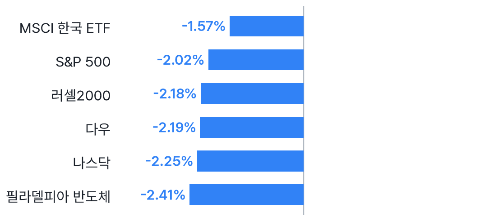
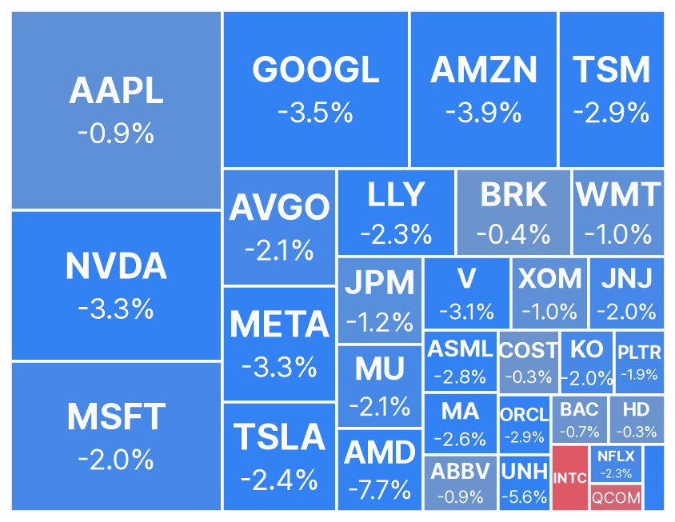
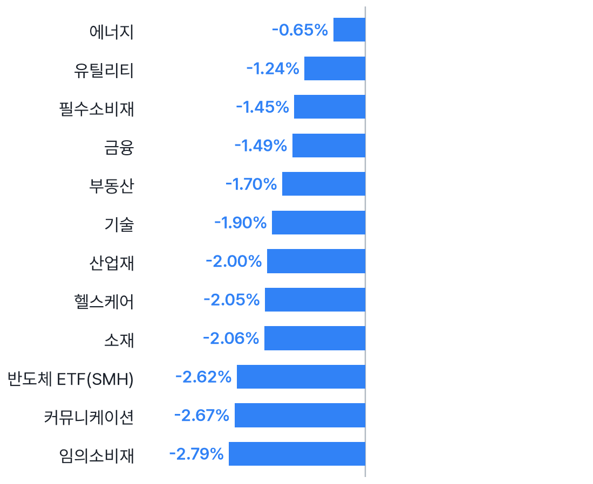
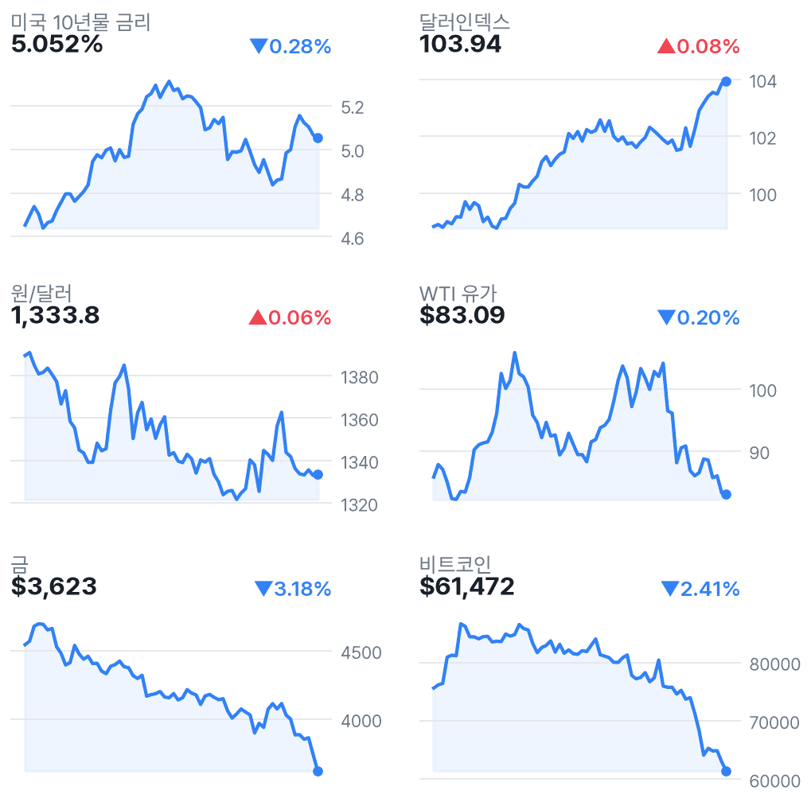
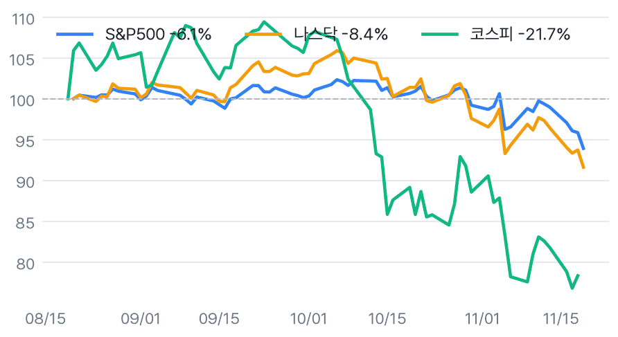

나스닥 2.25%↓, 앤트로픽 상장에도 AI주 매도
✅ 핵심 요약
- 앤트로픽은 상장 첫날 $97.17에 마감했지만, S&P 500은 2.02% 하락.
- 반도체지수 2.41%↓·엔비디아 3.30%↓. AMD는 공매도 보고서 이후 7.72%↓.
- VIX 28.44(+15.80%), 미 10년물 5.052%로 소폭 하락. 위험회피가 우세.
- EWY 1.57%↓, 원/달러 1,333.8원(+0.06%). 국내 반도체·외국인 수급 주목.
📊 주요 지표
S&P 500
7,175.83
▼2.02%
나스닥
23,879.20
▼2.25%
다우
49,097.06
▼2.19%
필라델피아 반도체
9,419.72
▼2.41%
VIX
28.44
▲15.80%
미국 10년물
5.052%
▼0.28%
원/달러
1,333.8
▲0.06%
달러인덱스
103.94
▲0.08%
WTI
$83.09
▼0.20%
금
$3,623
▼3.18%
비트코인
$61,472
▼2.41%
EWY(한국 ETF)
$134.59
▼1.57%
🧭 시장 해석
앤트로픽은 첫날 공모가를 웃돌았지만 시초가보다 낮게 마감했다. 상장 흥행에도 AI 설비투자 자금 조달 우려는 가시지 않았고, 엔비디아·브로드컴·마이크론이 동반 하락했다. 미 10년물 금리가 내리는 동안 VIX는 뛰어 위험회피가 두드러졌다.
전일 코스피(+1.39%)와 코스닥(+3.32%)은 반등했지만, 밤사이 EWY와 미국 반도체가 함께 밀렸다. 원/달러 변동은 작았던 만큼, 국내장 초반에는 삼성전자·SK하이닉스와 외국인 수급이 전일 반등의 지속 여부를 가늠할 단서다.
반도체 약세, AMD는 별도 악재
필라델피아 반도체지수는 최근 5거래일간 10.35% 하락했다. 이날 AMD는 7.72% 내렸지만 인텔(+1.92%)과 퀄컴(+1.38%)은 올랐다. 공매도 측은 AMD의 중국 사업이 수출규제에 노출돼 있다고 주장했다. 규제 위반이 확인된 것은 아니다.
장후 실적 발표 종목도 엇갈려
시간외에서 인튜이트는 10.65%, 로스스토어스는 6.31% 내렸고 키사이트는 1.27% 올랐다. 인튜이트는 별도로 메일침프를 벤딩스푼스에 매각한다고 밝혔다.
📈 차트
미국 주요 지수 등락률

2026-11-19 미국 정규장 종가 기준 · EWY는 코스피 선행 지표로 참고
미국 빅테크·대형주 히트맵

타일 크기 = 시가총액, 색 = 등락률 (빨강 상승 · 파랑 하락)
미국 섹터 ETF 등락률

SPDR 섹터 ETF + 반도체(SMH)
금리·환율·원자재 (3개월)

우측 상단 = 전일 대비
3개월 추세 비교 (시작=100)

미국 vs 한국 지수 흐름
🏦 애널리스트 · 리서치
- NVDA — Jefferies 목표가 $300→$250 하향매수 의견은 유지하되 목표가는 낮췄다.
- NVDA — Freedom Broker 목표가 $305→$230 하향매수 의견은 유지했지만 기존 목표가를 낮췄다.
- HD — Telsey 목표가 $410→$400 하향시장수익률 상회 의견은 유지했다.
- HD — DA Davidson 목표가 $377→$390 상향매수 의견을 유지하고 Telsey와 반대로 목표가를 높였다.
미국 대형주 의견·목표가 변경 4건 (Yahoo)
- 목표가 하향HD · Telsey Advisory GroupOutperform · 목표가 $410 → $400 · 11/19 05:13 KST
- 목표가 상향HD · DA DavidsonBuy · 목표가 $377 → $390 · 11/19 03:05 KST
- 목표가 하향NVDA · Freedom BrokerBuy · 목표가 $305 → $230 · 11/19 04:55 KST
- 목표가 하향NVDA · JefferiesBuy · 목표가 $300 → $250 · 11/19 03:23 KST
국내 종목분석 리포트 23건 (네이버 리서치)
-
미래에셋증권 · 2026-11-19
-
한화투자증권 · 2026-11-19
-
한화투자증권 · 2026-11-19
-
대신증권 · 2026-11-19
-
대신증권 · 2026-11-19
-
대신증권 · 2026-11-19
-
미래에셋증권 · 2026-11-19
-
미래에셋증권 · 2026-11-19
-
DS투자증권 · 2026-11-19
-
DS투자증권 · 2026-11-19
-
하나증권 · 2026-11-19
-
하나증권 · 2026-11-19
-
iM증권 · 2026-11-19
-
신한투자증권 · 2026-11-19
-
유진투자증권 · 2026-11-19
-
유진투자증권 · 2026-11-19
-
유진투자증권 · 2026-11-19
-
한국IR협의회 · 2026-11-19
-
한국IR협의회 · 2026-11-19
-
한국IR협의회 · 2026-11-19
-
IBK투자증권 · 2026-11-19
-
미래에셋증권 · 2026-11-19
-
IBK투자증권 · 2026-11-19
국내 투자전략 리포트 8건 (네이버 리서치)
-
대신증권 · 2026-11-19
-
대신증권 · 2026-11-19
-
iM증권 · 2026-11-19
-
신한투자증권 · 2026-11-19
-
신한투자증권 · 2026-11-19
-
IBK투자증권 · 2026-11-19
-
한화투자증권 · 2026-11-19
-
키움증권 · 2026-11-19
국내 시황정보 리포트 8건 (네이버 리서치)
-
신한투자증권 · 2026-11-19
-
신한투자증권 · 2026-11-19
-
DS투자증권 · 2026-11-19
-
다올투자증권 · 2026-11-19
-
신한투자증권 · 2026-11-19
-
SK증권 · 2026-11-19
-
유안타증권 · 2026-11-19
-
신한투자증권 · 2026-11-19
국내 경제분석 리포트 1건 (네이버 리서치)
-
키움증권 · 2026-11-19
📰 주요 뉴스
-
공모가를 웃돌았지만 기존 AI주 매도세는 이어졌다.CNBC
-
업종 약세에 수출규제 관련 불확실성이 더해졌다.CNBC
-
AI주 외에도 보험주에 개별 규제 부담이 불거졌다.MarketWatch
-
인튜이트 실적 발표와 함께 나온 사업 재편 소식이다.CNBC
-
두 달 연속 순매도. 오늘 외국인 수급의 배경이다.연합뉴스
미국·글로벌 헤드라인 18건
-
MarketWatch · 11/20 06:57
-
WSJ Markets · 11/20 06:56
-
CNBC · 11/20 06:51
-
MarketWatch · 11/20 06:45
-
CNBC · 11/20 06:43
-
WSJ Markets · 11/20 06:43
-
CNBC · 11/20 06:40
-
WSJ Markets · 11/20 06:30
-
MarketWatch · 11/20 06:27
-
CBS News · 11/20 06:25
-
MarketWatch · 11/20 06:22
-
CNBC · 11/20 06:16
-
CNBC · 11/20 06:14
-
MarketWatch · 11/20 06:13
- ‘I felt so seen’: Why families across America are laughing — and crying — over SNL’s ‘Sister’ sketchMarketWatch · 11/20 06:06
-
MarketWatch · 11/20 06:05
-
Reuters · 11/20 06:01
-
WSJ Markets · 11/20 06:00
국내 헤드라인 18건
-
연합인포맥스 · 11/20 06:53
-
아시아경제 · 11/20 06:41
-
디지털데일리 · 11/20 06:35
-
블루밍비트 · 11/20 06:33
-
뉴시안 · 11/20 06:33
-
조선일보 · 11/20 06:31
-
글로벌이코노믹 · 11/20 06:24
-
이투데이 · 11/20 06:20
-
연합뉴스 · 11/20 06:18
-
YTN · 11/20 06:15
-
연합인포맥스 · 11/20 06:13
-
블루밍비트 · 11/20 06:07
-
히트뉴스 · 11/20 06:04
-
연합뉴스 · 11/20 06:00
-
연합뉴스 · 11/20 06:00
-
www.cctoday.co.kr · 11/20 06:00
-
뉴스웍스 · 11/20 06:00
-
중앙일보 · 11/20 05:00
애널리스트 관련 헤드라인 12건
-
Benzinga · 11/20 04:27
-
Benzinga · 11/20 04:21
-
TradingView · 11/20 04:20
-
TradingView · 11/20 04:20
-
TradingView · 11/20 04:20
-
TradingView · 11/20 04:20
-
Benzinga · 11/20 01:43
-
TradingView · 11/20 01:20
-
Benzinga · 11/20 01:06
-
Barron's · 11/19 23:41
-
Benzinga · 11/19 23:29
-
Quantisnow · 11/19 23:25
🗓️ 일정
경제지표·이벤트 (KST)
- 22:30🇺🇸 미국 Philly Fed Manufacturing Index11/19 · 중요도 중간 · 예상 20.6 · 이전 20.9
- 22:30🇺🇸 미국 Unemployment Claims11/19 · 중요도 중간 · 예상 198K · 이전 200K
- 00:00🇺🇸 미국 Revised UoM Consumer Sentiment11/21 · 중요도 중간 · 예상 51.7 · 이전 51.0
- 00:00🇺🇸 미국 Revised UoM Inflation Expectations11/21 · 중요도 중간 · 이전 4.3%
어젯밤 장 마감 후 실적 (미국)
- INTU Intuit Inc.장후시총 $83.7B · EPS 예상 $2.47 · 시간외 ▼10.65%
- ROST Ross Stores, Inc.장후시총 $72.7B · EPS 예상 $1.85 · 시간외 ▼6.31%
- KEYS Keysight Technologies Inc.장후시총 $48.7B · EPS 예상 $3.09 · 시간외 ▲1.27%
다음 미국 세션 실적 예정
- BSP Bending Spoons S.p.A.장전시총 $29.7B · EPS 예상 $0.25
👀 체크포인트
- 국내 개장삼성전자·SK하이닉스와 외국인 현·선물 수급
- 11/21 00:00미시간대 11월 소비심리 확정치 (예상 51.7 / 잠정 51.0)
- 11/21 00:00미시간대 기대인플레이션 확정치 (잠정 4.3%)